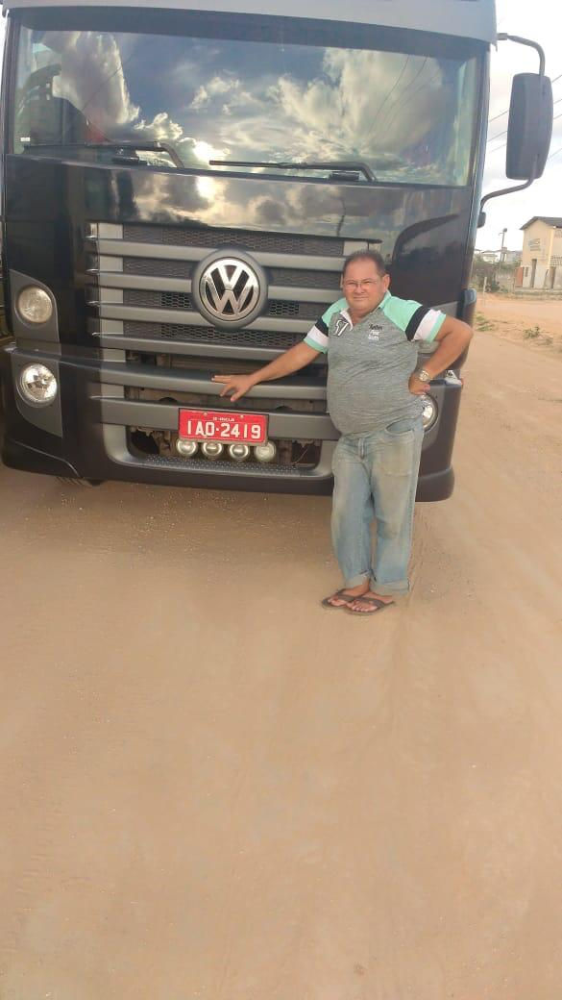

Conectando Cargas, Destinos e Negócios por Todo o Brasil
Experiência de mais de uma década no setor de transportes e o propósito de transformar desafios logísticos em soluções simples, ágeis e eficientes.
Soluções Simples, Ágeis e Eficientes
A Transvello Logística nasceu da experiência de mais de uma década no setor de transportes e do propósito de transformar desafios logísticos em soluções simples, ágeis e eficientes.
Com atuação voltada ao transporte multimodal de cargas, conectamos empresas e destinos em todo o Brasil, buscando a melhor solução para cada operação, de acordo com as necessidades de cada cliente.
Mais do que transportar cargas, nosso compromisso é encurtar distâncias, simplificar processos e proporcionar segurança e tranquilidade em cada etapa da operação, mantendo sempre uma comunicação clara e transparente.
Na Transvello, cada carga é tratada com responsabilidade, planejamento e atenção, porque sabemos que por trás de cada entrega existe um negócio que precisa seguir em movimento.
Rapidez, transparência e eficiência nos movem.
Transvello Logística — conectando cargas, destinos e negócios por todo o Brasil.
A Semente Plantada no Banco do Carona
A paixão do time pelo transporte rodoviário tem raízes profundas. A infância da nossa liderança foi acompanhada pelo barulho do motor a diesel, pelo cheiro do asfalto e pelas viagens no banco do carona dos caminhões nas estradas do Brasil.
Foi olhando o horizonte da cabine que aprendemos muito cedo a essência da profissão: o valor do compromisso, a responsabilidade com prazos e o respeito à família e às empresas que aguardam cada entrega.
"Cada viagem representa muito mais do que transportar uma carga: representa a realização do sonho de um negócio."

Nossa Liderança
Conheça as profissionais por trás do planejamento, finanças e operação da Transvello
Karine Almeida
Diretora Executiva & Comercial
Há mais de 12 anos vivenciando a dinâmica do transporte rodoviário. Construiu sua trajetória liderando planejamento de cargas, gestão de rotas, negociação de fretes e controle operacional de ponta a ponta.
Atua diretamente no crescimento comercial e no relacionamento com clientes e parceiros de estrada, garantindo soluções rápidas para qualquer imprevisto do caminho.
"Nenhuma tecnologia substitui aquilo que sustenta uma boa relação no transporte: confiança, respeito e palavra."
Tarciane
Gestão Operacional
Com ampla bagagem e vivência na rotina operacional, Tarciane garante que cada frete seja executado com máxima eficiência, do carregamento à entrega final.
É responsável pelo planejamento estratégico de rotas, seleção rigorosa da frota parceira e acompanhamento contínuo dos motoristas ao longo de todo o percurso.
"Agilidade operacional não é correr contra o tempo, é ter o planejamento certo para que nenhum imprevisto pare a carga."
Luciana
Gestão Financeira
Lidera a gestão financeira e a saúde fiscal da Transvello Logística. Garante total transparência nos acordos comerciais, segurança jurídica nos contratos e rigor na gestão de custos.
Sua atuação permite oferecer tarifas competitivas aos clientes sem abrir mão do cumprimento pontual e rigoroso dos compromissos com motoristas e parceiros.
"A transparência financeira é a base da confiança que mantemos com nossos clientes e parceiros de estrada."
Bruna
Faturamento & Documentação Fiscal
Responsável pelo fluxo documental de todas as operações de transporte. Atua na emissão ágil de CT-e, MDF-e e faturamento direto aos clientes.
Sua precisão técnica e agilidade mantêm os veículos rodando dentro da legalidade, sem atrasos burocráticos ou entraves em postos fiscais.
O Que Nos Move
A visão humanizada e técnica que guia cada frete e cada atendimento
Respeito ao Cliente
Entendemos o lado do cliente, que precisa receber sua mercadoria com total segurança, transparência e dentro do prazo pactuado.
Respeito ao Motorista
Conhecemos e valorizamos o trabalho de quem está atrás do volante enfrentando quilômetros para fazer a entrega acontecer.
Compromisso Real
Nenhuma tecnologia substitui os pilares da nossa relação: confiança, respeito e a palavra dada a cada parceiro comercial.
Nossos Princípios
O direcionamento estratégico de nossas operações
Missão
Promover soluções em transporte rodoviário com pontualidade e segurança, gerando valor constante para clientes e transportadores.
Visão
Ser referência em eficiência operacional, liderança feminina e confiabilidade no setor de agenciamento de transporte rodoviário.
Valores
- ✓ Transparência comercial
- ✓ Rigor com segurança
- ✓ Compromisso com prazos
- ✓ Valorização do motorista
Pronto para cotar seu frete conosco?
Fale com a nossa equipe operacional e encontre a melhor solução para o transporte da sua mercadoria.